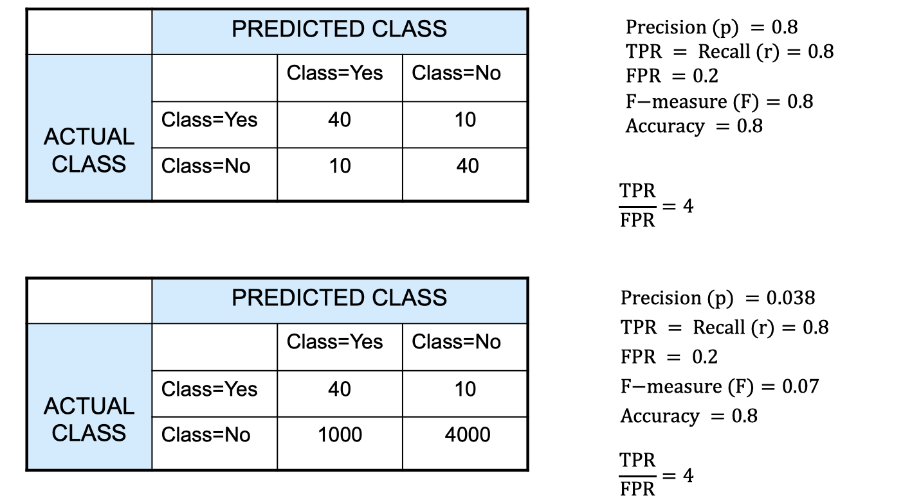
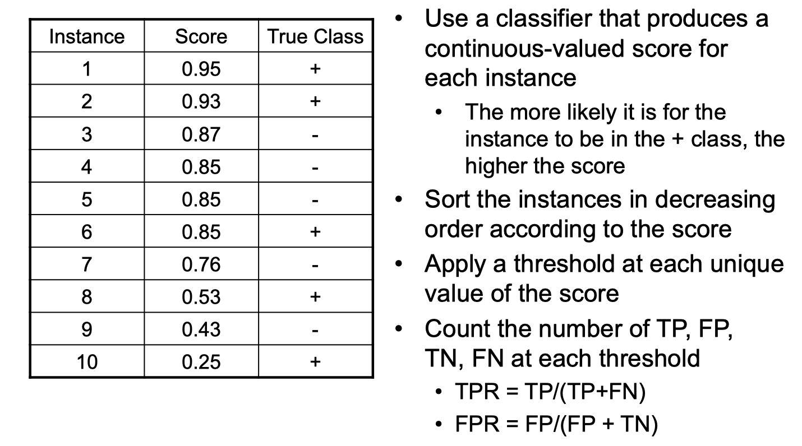

Data Mining: Imbalanced class problem
Acknowledgement: This course (CSCI 5523) is being offered by Prof. Vipin Kumar at the University of Minnesota in Fall 2020.
Lots of classification problems where the classes are skewed (more records from one class than another)
- Credit card fraud
- Intrusion detection
- Defective products in manufacturing assembly line
Challenges
- Evaluation measures such as accuracy are not well-suited for imbalanced class.
- Detecting the rare class is like finding a needle in a haystack (classic parable haha)
Confusion Matrix
- a: TP (true positive)
- b: FN (fasle negative)
- c: FP (false postiive)
- d: TN (true negative)
Recall is out of all the positive samples that are given, what fraction of them this classifier correctly classify. Sensitivity is often used in medical community.
Accuracy alone is not a sufficient way to evaluate models, so we introduce precision and recall, and then using F-measure to take both of them into account.
Let’s look at the example above. There isn’t really a one measure is better than another, because it depends on your situation particularly. For example, the first one here might be a bad idea for COVID testing, because the precision is only 50%, then the second one is favored.
There are more measures of classification performance.
is the probibility that we reject the null hypothesis when it is true. This is a Type I error or a false positive (FP).
is the probability that we accept the null hypothesis when it is false. This is a Type II error or a false negative (FN).

Let’s look at another example. These two cases are actually the same classifier. If we look at the actual class yes row, both case A and B give us 80% of right prediction. And if we look at actual class no row, both case A and B gives us 80% of right prediction too. In short, the is the same for these two cases. The only difference here maybe the sample size, but they’re the same classifier. Notice that here the F-measures are different. This is an exmaple to show you that F-measeare can potentially fail us.
ROC (Receiver Operating Characteristic)
Every points sitting on the red curve, the TPR is higher than FRP.
The coordinates on the graph is (TPR,FPR).
- (0,0): declare everything to be negative class
- (1,1): declare everything to be positive class
- (1,0): ideal
Using ROC for Model Comparison
Hot to construct an ROC curve

In the image above, the score is the fraction of positive prediction and negative prediction in the leaf node (decision tree, for instance). This is a way to convert discrete ouput value to continuous value because we need continuous value to plot the ROC curve. The following is how it may look like:
How to build classifier with imbalanced training set
Modify the distribution of training data so that rare class is well-resented in training set.
- Undersample the majority class
- Oversample the rare class